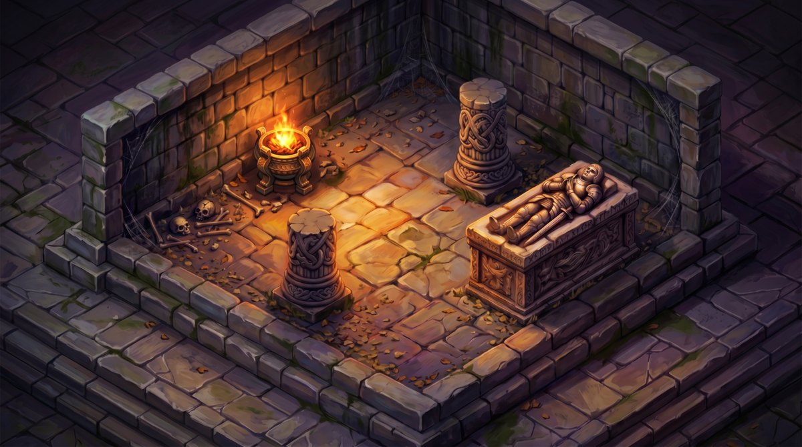
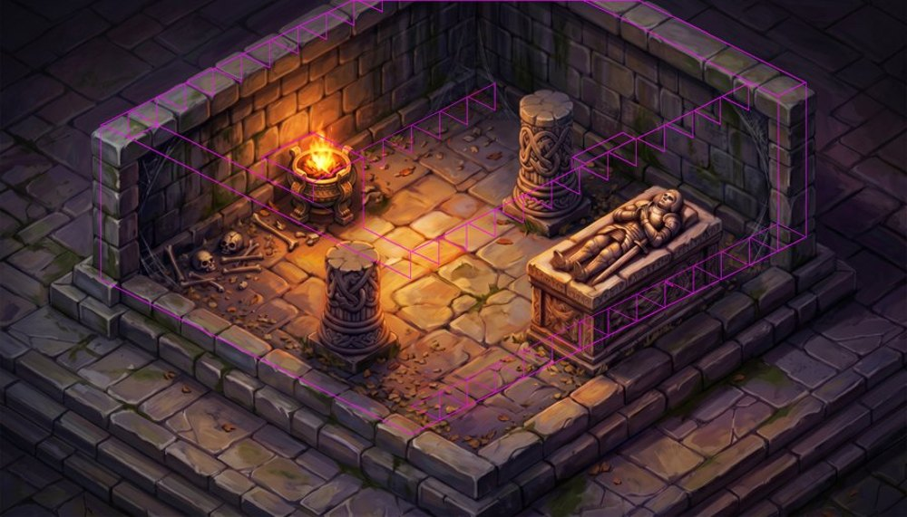
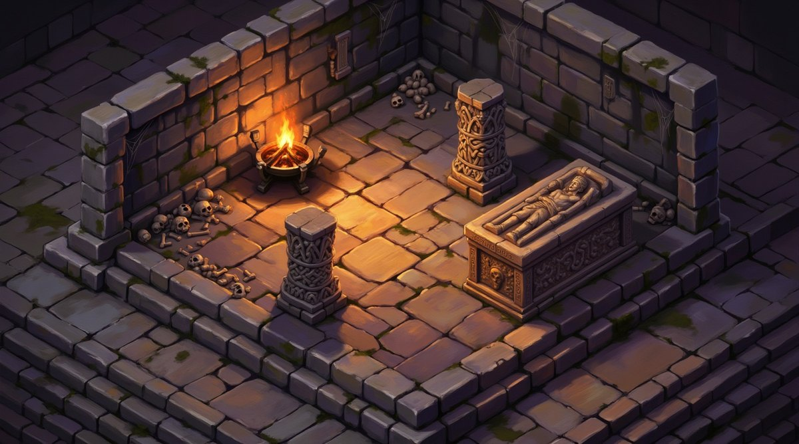
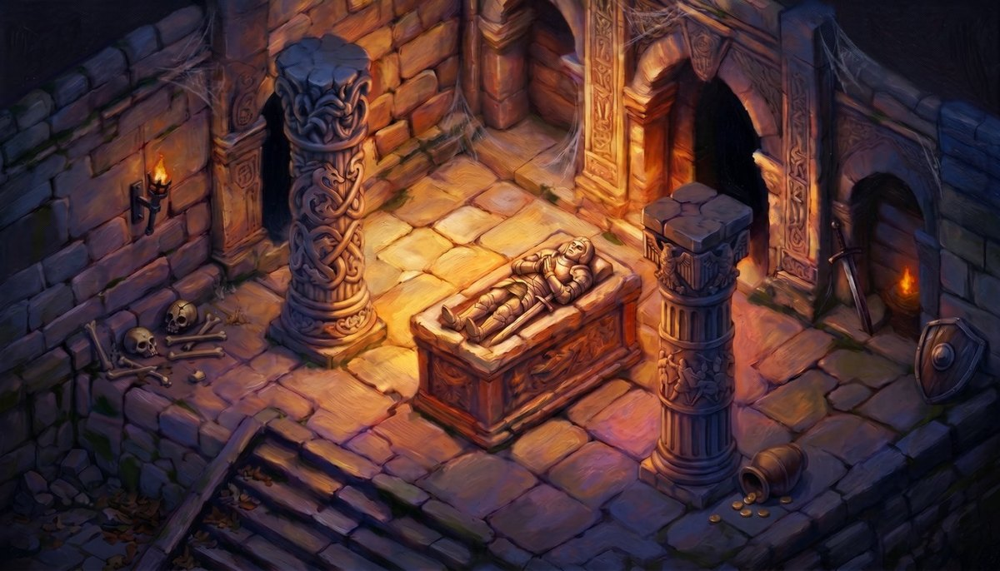
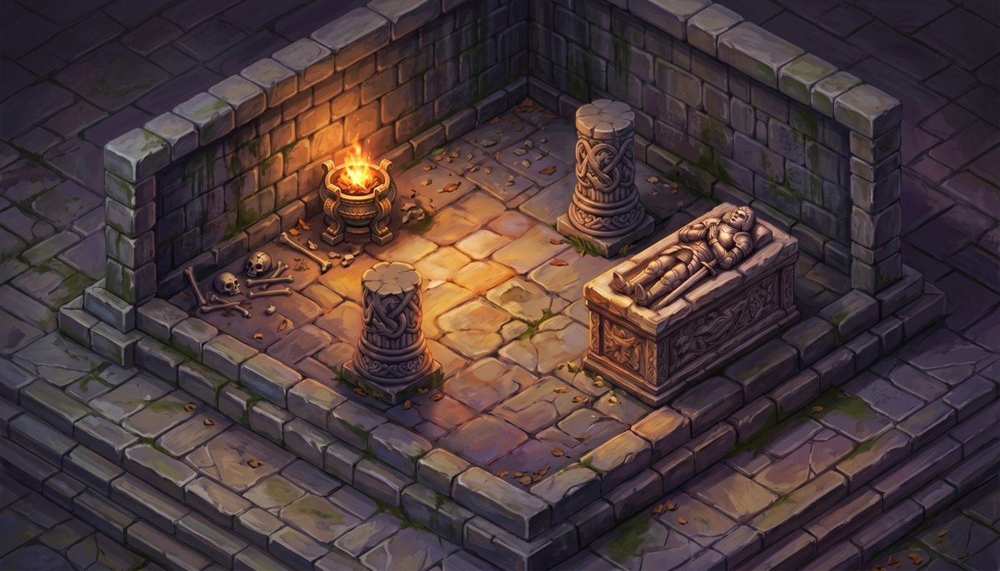
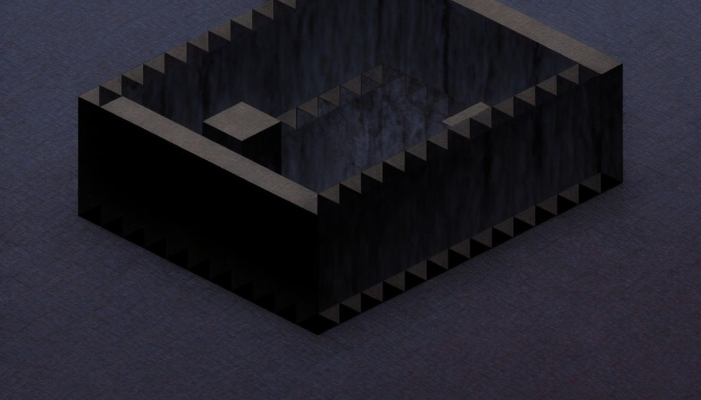

Goal: replicate the validated true-greybox method on the crypt and try to honestly beat the 8.0 incumbent
(crypt_armb_iter3) — matching its ornamentation without importing its content-drift (staircase / archway /
2nd tomb / 2× tomb scale). Base + geometry from PR #1514. API-side only, no box, no training.
recipe
candidate
panel median
incumbent
control
Δ vs control
honesty bar (≥7.3)
adopt
(a) Gemini two-stage
iter3_a2
7.1
7.8
8.8
−1.7 ✓(≥−2.5)
7.1 < 7.3 ✗
NO
(b) FLUX enrichment
iter3_flux_s40
6.6
7.8
7.5
−0.9 ✓
6.6 < 7.3 ✗
NO
Outcome (recipe c): both stalled below 7.5. Best candidate iter3_a2 @ 7.1 — a large honest gain over iter2
(6.0, Δ−3.0) that now CLEARS the automated adoption floor, but MISSES the honesty bar by 0.2 and trails the incumbent by
0.7. Not adopted. The incumbent's edge is bought with content-drift richness an honest greybox composition cannot include.
Best candidate — iter3_a2 BEST · 7.1 · not adopted

iter3_a2 — Gemini two-stage enrichment over the structure-locked iter2-f base. Dense carved knotwork pillars + runed/figural sarcophagus + chiaroscuro firelight, holding the exact 3-prop composition.

Overlay vs #1514 greybox (magenta = authored edges). 3-prop composition holds; no staircase/archway/2nd-tomb/opening added. recall 0.832 (content-blind corroboration).
Recipe (b) — FLUX enrichment 6.6 · scored lower

iter3_flux_s40 — FLUX + ARM-C interior LoRA. Visibly denser but the blind panel read it as "repetitive skeleton piles / flatter tiling". Busier ≠ better.
References

INCUMBENT 8.0 (panels 7.8) crypt_armb_iter3 — the ornamentation bar. Rich BUT embeds content-drift: staircase, back archway, 2nd tomb, full-height columns, 2× tomb scale.

iter2-f — prior 6.0 composition-faithful but flat; the Stage-1 base iter3 enriched.

BASE (registered, #1514) the true greybox — registration truth lives here; the style pass is cosmetic.